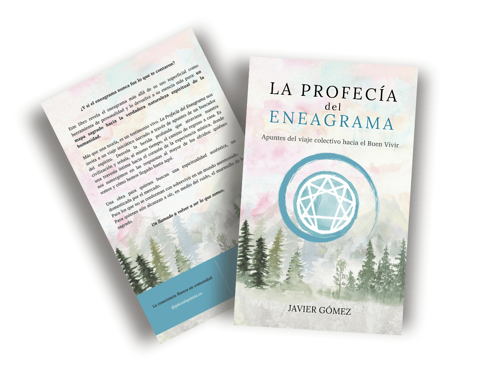

Javier Gómez
Psicoterapeuta — Explorador de la Consciencia
Acompaño procesos de transformación interior
Puente entre misticismo y transformación social
Sobre Mí
Acompaño procesos de autoconocimiento y transformación interior desde un enfoque integrativo que une psicología, espiritualidad y cuerpo.
Mi trabajo nace del encuentro: no busco imponerte conocimiento, sino acompañarte a recordar el tuyo. No se trata de autoridad, sino de presencia compartida, escucha y descubrimiento mutuo.
Soy psicólogo, terapeuta y psiconauta. Durante siete años viví en Colombia, donde me formé en terapia gestalt integrativa, trabajo informado en trauma, abordajes somáticos y otras técnicas y herramientas, mientras aprendía de curanderas tradicionales y guardianes de las medicinas ancestrales. Ahora vivo viajando, lo que me permite seguir aprendiendo constantemente y trabajar de manera virtual desde cualquier lugar del mundo, acompañando procesos sin fronteras.
Integro el rigor de la psicología contemporánea con la sabiduría de las tradiciones de sanación milenarias, acompañando a personas en procesos de transformación profunda, crisis existenciales y despertar espiritual.
Creo que la sanación individual es inseparable de la transformación colectiva. Practico una espiritualidad consciente y comprometida, que no huye del mundo, sino que lo escucha, lo cuestiona y busca regenerar la trama viva de lo humano y lo sagrado.
También podría decir que soy un eterno estudiante de la meditación y del sufismo, y que encuentro en la escritura una forma profunda de exploración y expresión. Soy autor de 'La Profecía del Eneagrama', un libro que revela el eneagrama como un mapa sagrado hacia nuestra verdadera naturaleza espiritual
Lo que hago está dirigido a quienes buscan no solo sanar heridas, sino recordarse a sí mism@s, despertar su presencia y vivir en coherencia con su corazón
Mi Libro
La Profecía del Eneagrama
¿Y si el eneagrama nunca fue lo que creíste que era?
En un mundo donde todo se ha convertido en mercancía —incluso lo más sagrado—, este libro revela el eneagrama más allá de su uso superficial como herramienta de personalidad y lo devuelve a su esencia más pura: un mapa sagrado hacia la verdadera naturaleza espiritual de la humanidad.
Un viaje iniciático hacia el corazón de lo que somos
La Profecía del Eneagrama no es un manual de autoayuda ni una clasificación de tipos psicológicos. Es una experiencia de despertar, narrada a través de los apuntes y las notas de campo de un buscador del espíritu, que funcionan como un verdadero ritual de autodescubrimiento.
Este libro te guiará en un sendero progresivo a través de cuatro cuadernos de viaje espiritual para revelar:
- Una inmersión profunda en el eneagrama como ciencia espiritual viva, más allá de las miradas comerciales.
- Una aproximación detallada de la experiencia mística a través del eneagrama como puerta de acceso a nuestra esencia.
- La exploración de los pilares de la sociedad actual desde una mirada enraizada en la claridad mística.
- Las posibilidades de construcción social a partir de la integración de la experiencia espiritual
Pero sobre todo, te enseñaré a volver al corazón: a reconectar con la fuente de amor, sabiduría y verdad que siempre ha habitado en ti.
Cada página trabaja sutilmente con tu consciencia, invitándote a recordar lo que siempre has sido pero que, quizás, habías olvidado.
Más que teoría: una herramienta espiritual de transformación profunda
Esta obra trasciende lo psicológico para adentrarse en lo espiritual sin dejar de lado la realidad social y política de nuestro tiempo. Aquí encontrarás:
• Una visión revolucionaria del eneagrama como ciencia espiritual viva, no como clasificación de la personalidad
• Una lectura como meditación contemplativa que funciona como portales hacia estados profundos de consciencia
• Un abordaje críptico y enraizado que desvela los fenómenos que nos alejan de nuestra esencia
• Prosa y poesía entretejidas, creando una experiencia única que toca las fibras más profundas del alma
• Un puente entre misticismo y acción, que integra la experiencia espiritual con la construcción de realidades alternativas
Una invitación urgente a practicar espiritualidad verdadera
Este libro no ofrece respuestas fáciles ni soluciones instantáneas. En cambio, te invita a un ejercicio de consciencia profunda, a contemplar en lugar de interpretar, a escuchar el murmullo de lo esencial bajo el ruido del mundo anestesiado.
Es un testimonio vivo para quienes:
- Buscan una espiritualidad auténtica, no diseñada para el mercado
- Sienten el llamado a despertar de la ilusión colectiva
- Están list@s para emprender el viaje de regreso a sí mism@s
- Intuyen que la revolución interior es inseparable de la transformación del mundo
- Desean profundizar en cómo construir comunidades alineadas con el espíritu
Un libro que no te deja igual
"La Profecía del Eneagrama es una obra espiritual profunda que cuestiona las estructuras de poder mientras abraza la ternura como método."
Es un mapa hacia la totalidad. Una invitación a recordar. Un llamado a volver a ser lo que somos.
Para los que aún pueden oír, en medio del ruido, el murmullo de lo sagrado.
Cómo Trabajamos Juntos
"El acompañamiento es un espacio de verdad compartida.
No para ser arreglados, sino para recordar lo que somos."
Sesión Individual de Acompañamiento Terapéutico
Espacio de 75 minutos informado en trauma para procesos de transformación interior profunda, crisis existenciales, integración de experiencias significativas (psicodélicas, místicas, traumáticas), trabajo con patrones inconscientes y desarrollo de capacidades.
Este espacio es para ti si:
- Estás atravesando una crisis existencial o transición vital
- Has tenido experiencias que necesitas integrar
- Sientes que necesitas ayuda para transitar cualquiera que sea tu experiencia actual
Duración: 75 minutos
Inversión: 65'80
Solicitar sesión